jQuery源码分析————队列
原理
队列是一种特殊的线性表，只允许在队头进行删除操作（出队），在队尾进行插入操作（入队）。队列的特点是先进先出，即最先插入的元素最先被删除。与普通队列不同之处为，jQuery.queue 和 jQuery.fn.queue 不仅执行出队操作，返回队头元素，还会自动执行返回的队头元素。
使用上，jQuery 提供了 2 组队列操作的 API：jQuery.queue/dequeue 和 jQuery.fn.queue/dequeue。$.queue为显示或操作匹配的元素上已经执行的函数列队，类似队列的push操作，内部通过$.data 将方法缓存（必须是 dom 对象才能使用 queue）。$.dequeue为对匹配的元素上执行队列中的下一个函数，每调用1次仅出列1个，因此当回调有N个时，需要调用$.dequeue 方法 N 次元素才全部出列。
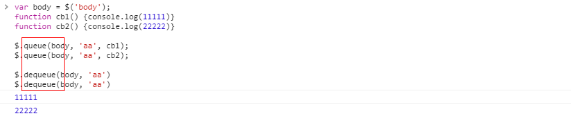
\$.dequeue 内部还是生成 next 方法，传递给入列方法（第 2 个参数），因此，可以在 1 个方法中直接调用队列下一个方法。
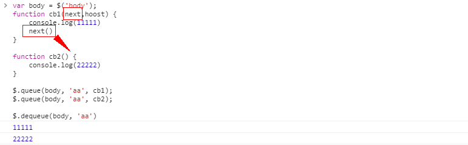
\$.dequeue 内部还生成 hooks，用于清空该元素对应的队列缓存，还可以停止延迟队列的进一步调用(stop 方法)。
源码
queue
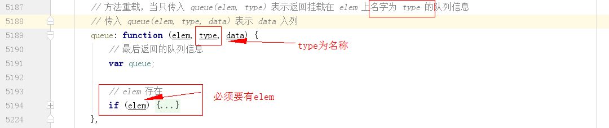
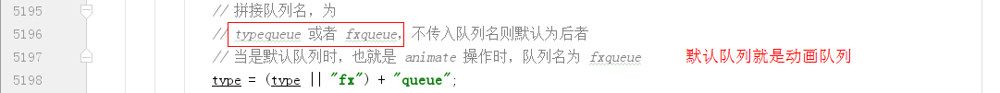
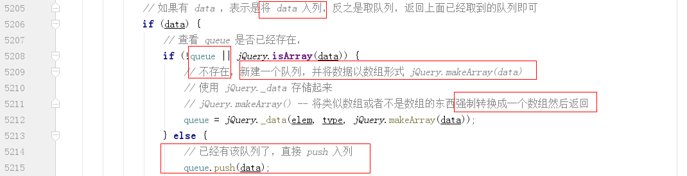
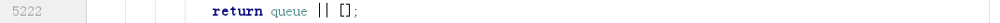
可见 queue 中使用的缓存系统，队列类型为 key，值是 1 个数组（jQuery._data 存取数据返回的都是保存的数据，这里保存的数据 data 已转为数组）。
_queueHooks
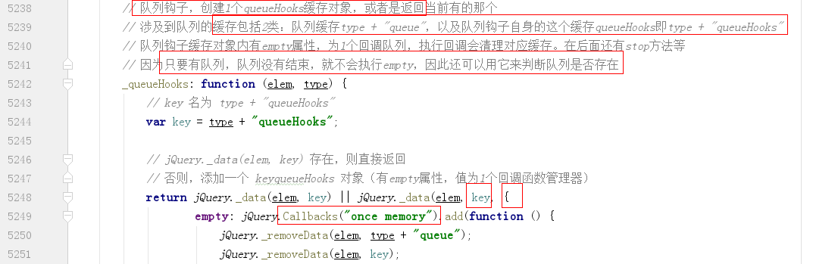
dequeue
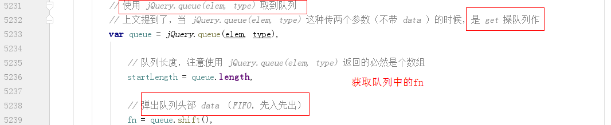
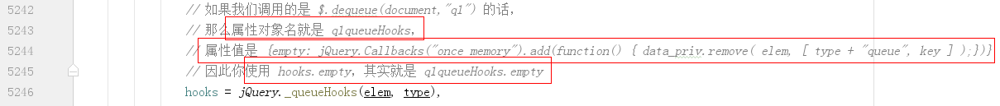
调用队列中的回调，并给回调传参 next 和 hooks，因此可以使用 next 调用下一个出队操作，还可以暂停 delay 队列（delay 队列有 stop 方法附加到 hooks 上）。
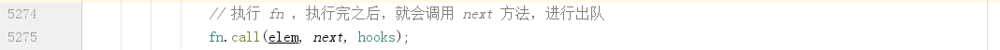
当队列出队完成后，调用 hooks 中的 empty，清空队列缓存。
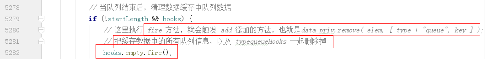
jQuery.fn.queue
调用 jQuery.queue 方法入队。
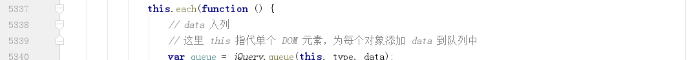
调用 jQuery._queueHooks 创建 1 个 queueHooks 缓存对象（由此可见所有的队列都有这个操作，缓存对象生成后就和这个元素相关，不需要返回值也能获取）。
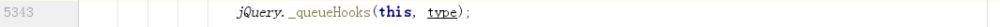
如果队列顶部不是占位符 inprogress 且 type 是 fx 则调用出队列。
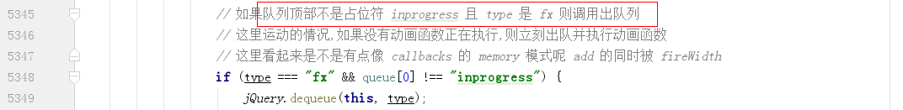
jQuery.fn.dequeue
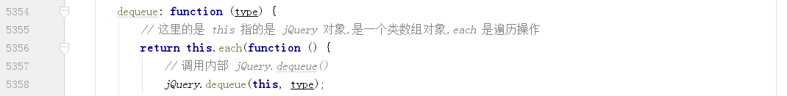
jQuery.fn.delay
设置延迟出队，前 1 个队列方法出队执行后，在这里 delay（添加 1 个新队列），然后再执行后面的队列方法。
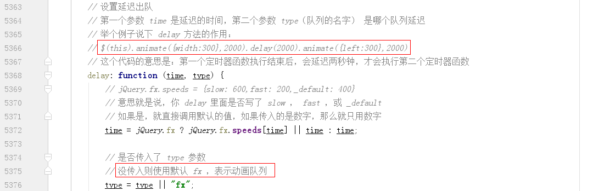
dequeue 会调用队列的这个回调，传入 next，然后这里间隔后会执行这个 next，从而实现后面的出队。这里设置 hooks.stop 是为了清除延迟，在 dequeue 调用下 1 个队列时，会传入 hooks。
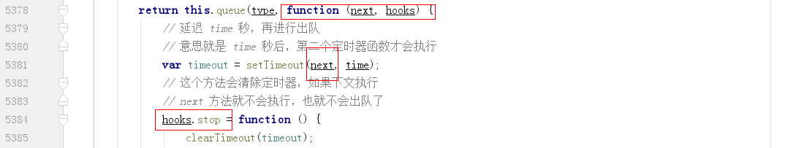
jQuery.fn.clearQueue
清除队列，使用的方法是置空队列。传入数组，会覆盖队列的原数组。
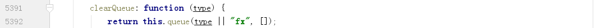
jQuery.fn.promise
是 jQuery 的原型方法，而不是 deferred 的方法，用于队列执行完成后执行的异步操作。
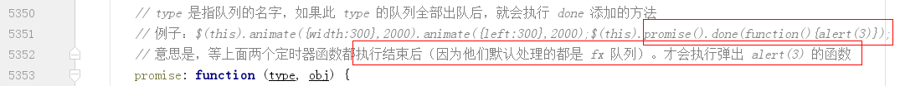
首先新建 1 个 deferred，然后遍历匹配集，增加 count（等于匹配集个数），添加 resolve 函数到每个匹配集元素的回调集。因为所有队列最后都会执行 queueHooks，因此会最后执行 resolveWith 方法。
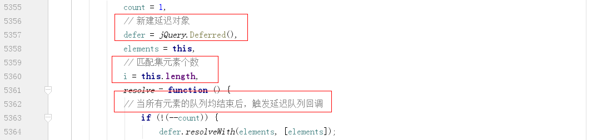
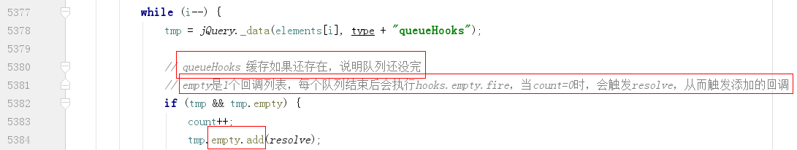
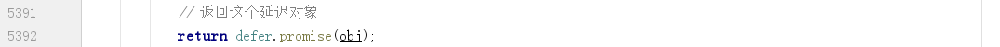